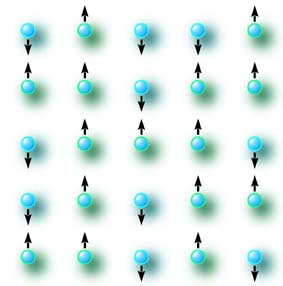

|

|
Starting from the year 1997 Institute for Condensed Matter Physics in cooperation with the Chair
for theoretical physics of the Ivan Franko National Universiy of Lviv organizes Ising lectures: a
seminar on physics of phase transitions and critical phenomena. The seminar aims in promoting and
deepening studies of critical phenomena as well as in exchanging information between scholars working
in this field. The level of presentation allows for participations of physics students and physicists
working in different areas. Text of the lectures appears in a form of the ICMP preprints. Both
review lectures as well as reports on original work (in English or in Ukrainian) are welcome.
Please contact Yurij Holovatch with your proposals. |